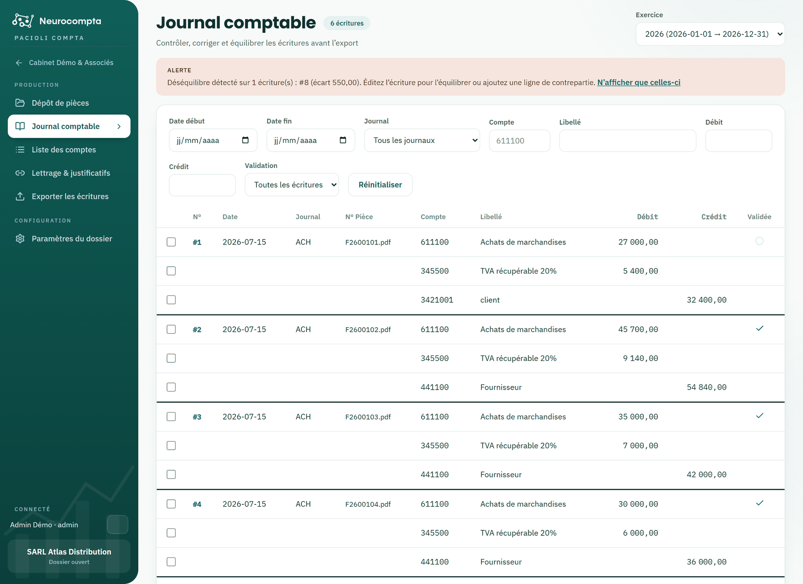

Consulter le journal comptable
Retrouver, vérifier et valider les écritures du dossier.
Le journal rassemble toutes les écritures du dossier, quelle que soit leur origine. C'est l'écran de contrôle avant l'export.
Les écritures déséquilibrées y sont signalées mais restent visibles : elles doivent être corrigées, pas dissimulées.

Filtrer
- Par exercice, par période, par journal, par compte ou par libellé.
- Par montant, au débit ou au crédit.
- Par état de validation, pour isoler ce qui reste à valider.
Ouvrir une écriture
Cliquez sur le numéro d'une écriture pour l'ouvrir en saisie. Vos filtres sont conservés : en revenant au journal, vous retrouvez exactement la liste que vous aviez.
Valider
- La validation se fait écriture par écriture, ou sur une sélection.
- Une écriture déséquilibrée ne peut pas être validée.
- La date de validation alimente le champ correspondant du fichier FEC.
- Dévalider une écriture demande une confirmation, pour éviter le geste réflexe.
Astuce — Depuis l'écran des dossiers, le badge « écritures déséquilibrées » ouvre le journal déjà filtré sur les écritures concernées.